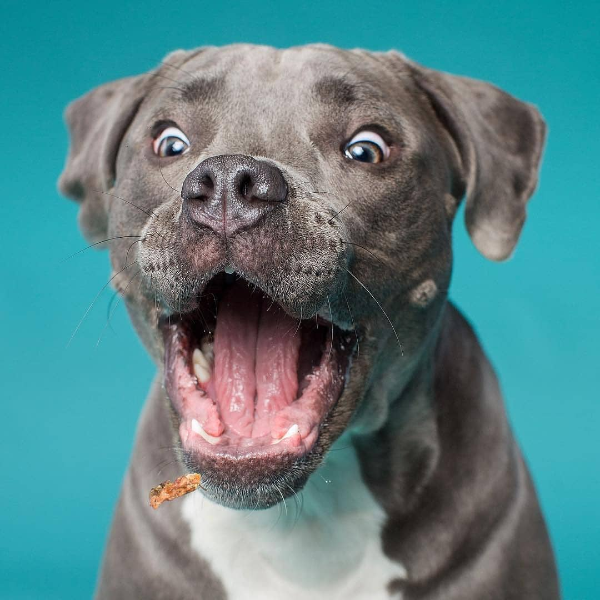
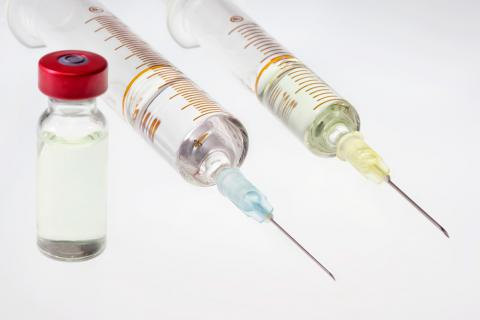
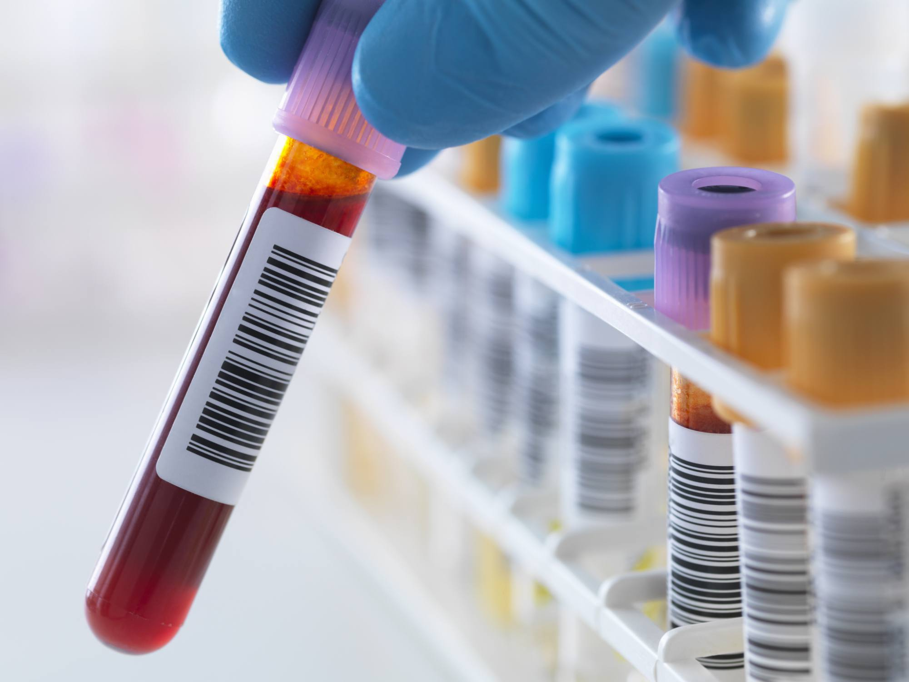

Veterinaria mis 4 patas 
Emergencia las 24 horas

Unidad de video endoscopia Diagnostica y terapeutica
Somos los pioneros, con mas de 12 años de experiencia ofreciendo el servicio de edoscopia diagnostica y terapeutica para caninos, felinos y animales silvestes

Unidad de Cirugia de minima invasion laparoscopica
Ofrecemos el servicios de cirugia de minima invasion laparoscopica, a traves de un staff de medicos altamente calificados, infraestructura y equipamentos de ultima generacion.

unidad de Medicina Reproductiva y Banco de Semen
Contamos con los ultimos protocolos diagnosticos y terapeuticos para el manejo de las enfermedades que afectan el sistema reproductor de nuestras mascotas. Y desde hace dos años, venimos ofreciendo el servicio de congelamiento de semen, bajo los protocolos de CLONE USA.